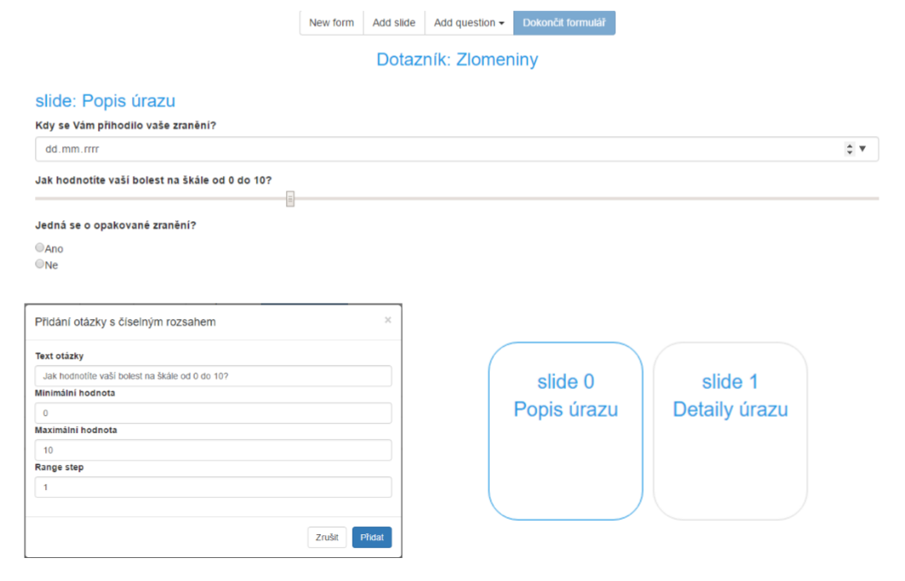
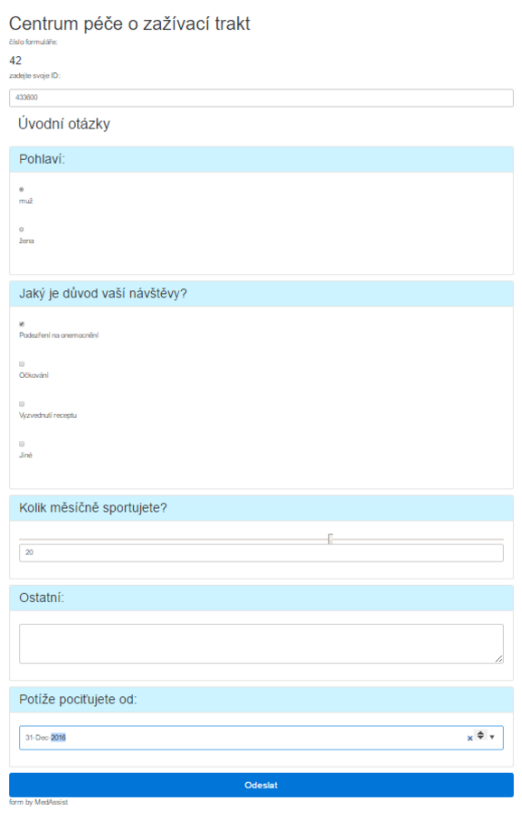

Table of Contents
- Authors
- Supervisors
- Task
- Concept
- Used environments
- Technologies
- Libraries
- Final reports
- Current state
- Database
- Backend
- Frontend
- Doctor
- Patient
Authors
Tomáš Soukal, Petr Révay, Júlia Sabanošová, Lenka Šmitalová
Supervisors
- Mgr. Marek Grác, Ph.D.
- Mgr. Luděk Bártek, Ph.D.
- doc. RNDr. Tomáš Pitner, Ph.D.
Project Task
Your task is to prepare the system for creating, presenting and evaluating simple questionnaires. Questionnaire ought to be easily fillable on a mobile device at the doctor's office. The doctor can manage these and evaluate them in the desktop client. The questionnaire consists of a few slides with questions based on conditional pass. Visual part may be fully generated (checkbox, combobox, slider, text).
Concept
How we initially projected this project?Used environments
- NetBeans IDE 8.1
Used technologies
- eXist-db 3.0
- Java SE 8
- Tomcat 7
- JavaScript
- jQuery
- HTML5
- CSS3
- Bootstrap 3, 4
Used libraries
- Maven 3.3.3
Final reports
- Tomáš Soukal
- Petr Révay
- Júlia Sabanošová
- Lenka Šmitalová
How does it look like?
Let's start with the diagram of project logic.

You can see the blueish backbone of the project. We will comment all necessary parts in the bottom-up order.
Database
As the database we have chosen exist-db 3.0. You have to install this database prior to next steps. We use this database for storing blank forms and patients' answers to these forms. Make sure the database is running.
Backend
The backend consists of Utils.java and MedAssistManager.java classes. There are also schemas for the validation of forms and answers.
MedAssistManager
This class provides list of doctors identified by their number IDs, createNewFormXML() for creating empty file, createNewForm() for creating new form for the doctor, findAllForms() for finding all forms belonging to the doctor and getFormAsHTML() for the returning of required form as HTML. For more precise documentation check please the JavaDoc.
Utils
This class provides just helping methods. Provided classes are newDocumentInstance(), convertDocumentToString(), xslTransform(), formatOutput().
Frontend
The frontend consists of DoctorController, PatientController and InitListener classes.
InitListener
This class is used for initializing context of the application and implements ServletContextListener. You have to set proper URI variable there (default: xmldb:exist://localhost:8899/exist/xmlrpc/db) where the database files will be located! This class provides methods for setting the context of the servlet and helper function prepareCollection() for connecting to the database.
DoctorController
This is the controller for operations related to the doctor. Methods provided are doGet() for handling HTTP GET method, doPost() for handling HTTP POST method, listForms() for creating list of arrays of all forms and createForm() for creating new form and storing it in the database. For more precise documentation check please the JavaDoc.
PatientController
Methods provided in this class are doGet() and doPost() with similar usage as in the DoctorController, printForm() for showing requested form using XSL transformation and listForms() for creating list of arrays of all the forms.
Doctor
Editor is created with JavaScript, more precisely formManipulation.js and main.js.
Patient
Form is delivered as HTML, after clicking the Submit button createAnswerXML.js creates answer document in the answer.xml format.